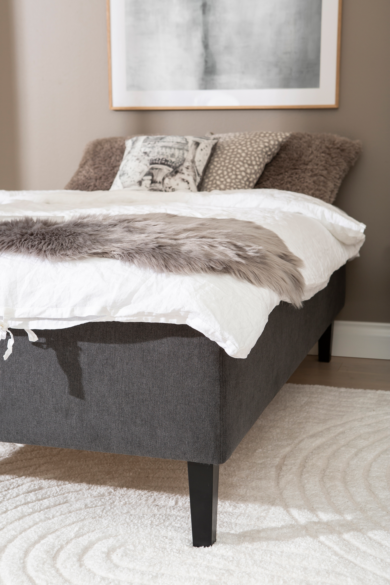
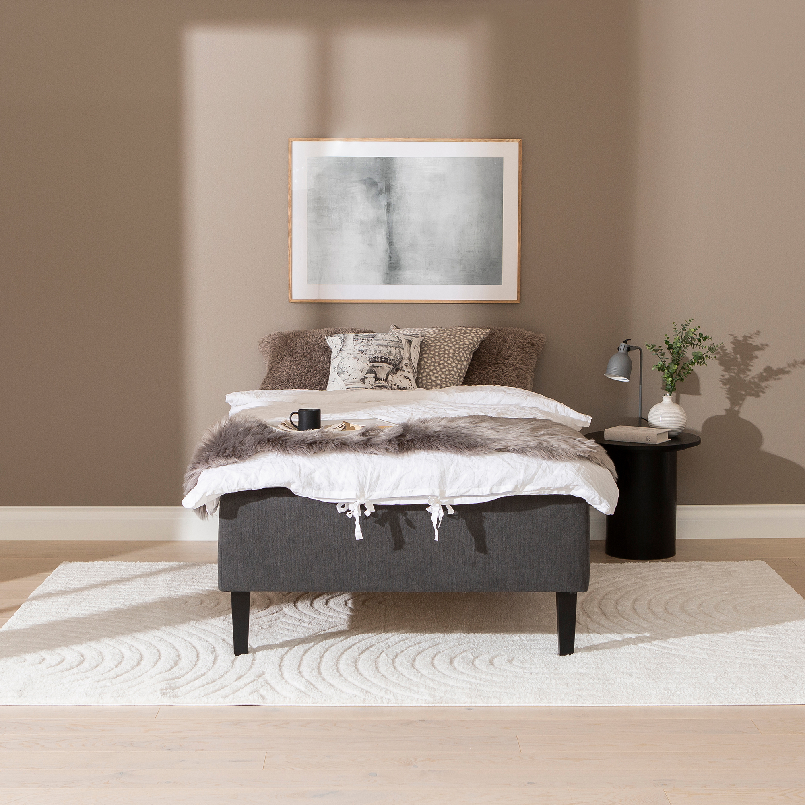
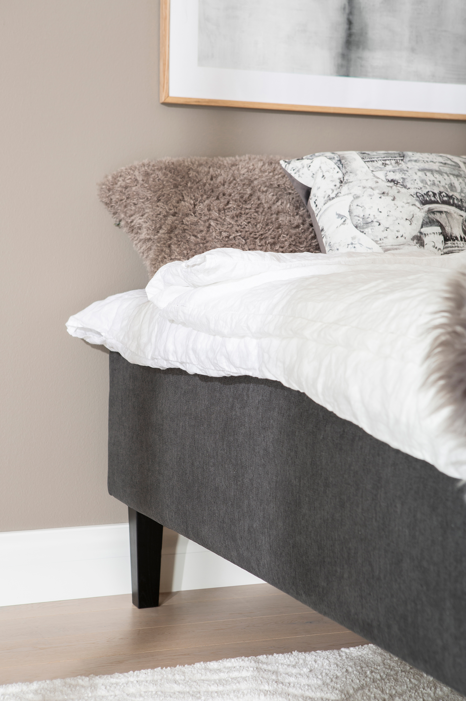
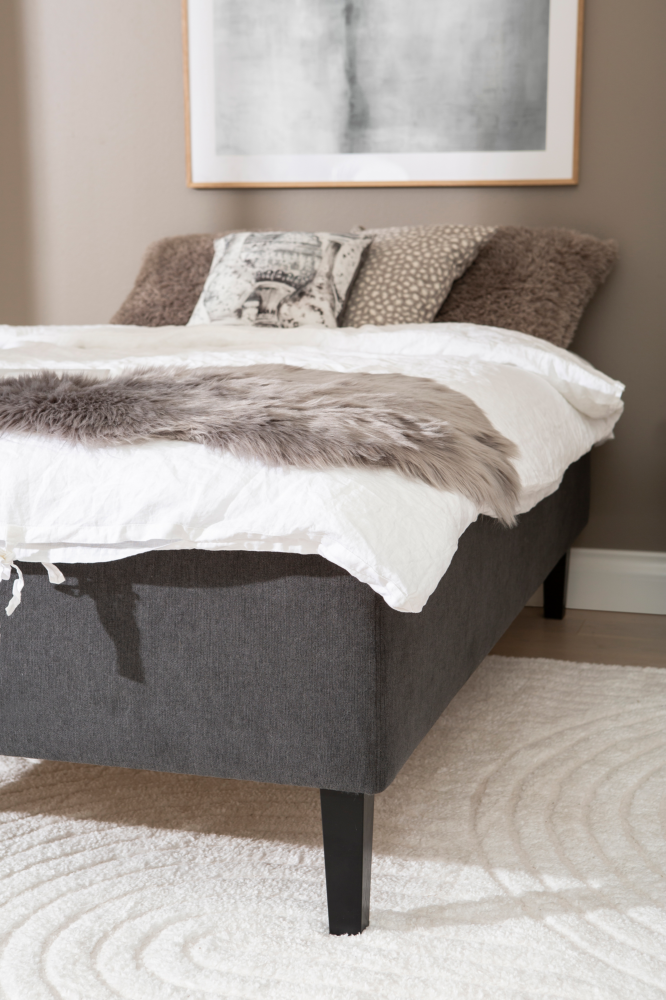
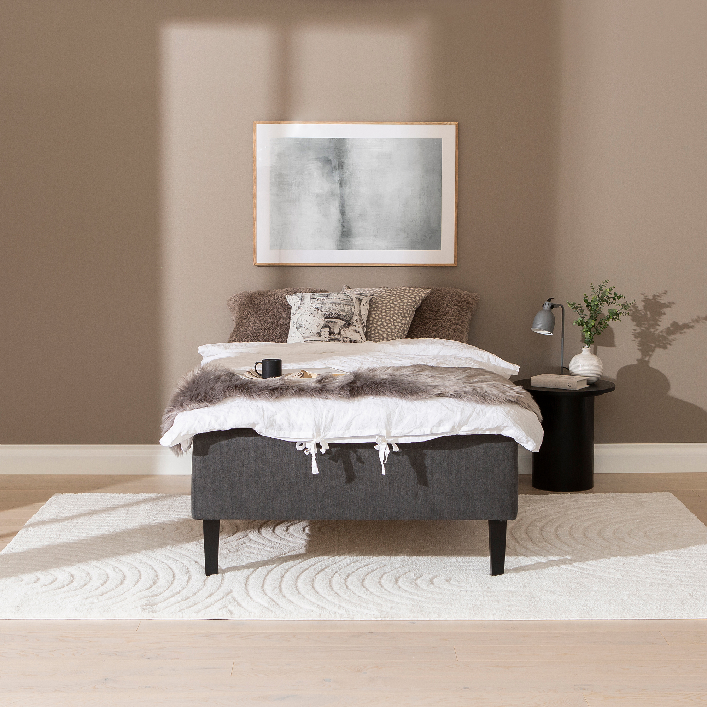
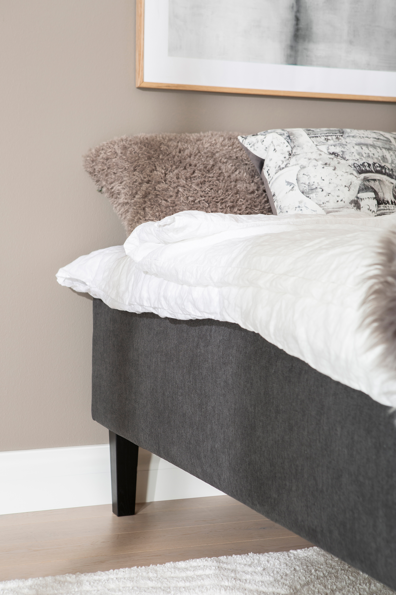

Moon Gold divan bed 120x200, visco, Primo 96 Anthracite
197671
 





Description
The Moon Gold divan bed offers a sophisticated blend of comfort and functionality with its generous 120×200 cm size and high-quality viscoelastic mattress. Upholstered in elegant Primo 96 anthracite fabric, it complements modern bedroom interiors with its neutral yet deep color tone. The bed rests on sturdy 23 cm conical black legs that add a sleek, contemporary touch while ensuring stability. Featuring a practical lift-up storage compartment beneath the mattress, this divan maximizes bedroom space by providing ample room to store linens and other essentials. As part of the premium tier in the NEST & LIVING collection, the Moon Gold bed exemplifies superior design and comfort without implying material composition by tier naming.
Technical specifications
| Color | Anthracite |
|---|---|
| Size | 120 × 200 cm |
| Mattress type | Viscoelastic (Visco) |
| Leg height | 23 cm, conical black |
| Storage | Lift-up under-bed storage |
| Tier | Gold |